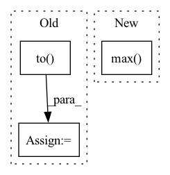

Pattern ID :15596
Before Change
estimated_amplitude = estimated_amplitude.transpose(3, 2, 1, 0)
estimated_sources = norbert.wiener(estimated_amplitude, mixture, eps=eps)
estimated_sources = estimated_sources.transpose(3, 2, 1, 0)
estimated_sources = torch.from_numpy(estimated_sources).to( device, dtype)
return estimated_sourcesAfter Change
ratio = estimated_sources_amplitude / estimated_sources_amplitude.sum(dim=0)
estimated_sources = ratio * mixture
norm = max(1, torch.abs(mixture).max() / 10)
mixture, estimated_sources = mixture / norm, estimated_sources / norm
estimated_sources = update_em(mixture, estimated_sources, iterations, eps=eps)
estimated_sources = norm * estimated_sourcesIn pattern: SUPERPATTERN
Frequency: 3
Non-data size: 3
Instances Fragment ID: 52823238
Project Name: tky823/dnn-based_source_separation
Commit Name: d45a578a242ecb277ef7bdc5c9d6f75c4ad13521
Time: 2021-08-20
Author: 40362510+tky823@users.noreply.github.com
File Name: egs/musdb18/d3net/src/adhoc_driver.py
M Class Name: AnonimousClass
N Class Name: AnonimousClass
M Method Name: apply_multichannel_wiener_filter(5)
N Method Name: apply_multichannel_wiener_filter(4)
M Parent Class:
N Parent Class:
M File Name: egs/musdb18/d3net/src/adhoc_driver.py
N File Name: egs/musdb18/d3net/src/adhoc_driver.py
M Start Line: 398
M End Line: 414
N Start Line: 385
N End Line: 403
Before Change
def sweep_n(ntensor, niter, dtype):
print("n, dtype, ntensor, gflop, runtime, tflop/s")
for n in [16, 32, 64, 128, 256, 512, 1024, 2048, 4096]:
nt_a = torch.nested_tensor(
[torch.randn(n, n).to( dtype) .cuda() for t in range(ntensor)]
)
nt_b = torch.nested_tensor(
[torch.randn(n, n).to(dtype).cuda() for t in range(ntensor)]After Change
nt_a_size = torch.ops.aten._nested_tensor_size(nt_a)
lengths = nt_a_size[:, 1]
print(",".join(map(str, [ntensor, dtype, lengths.min().item(),
lengths.float().mean().item(), lengths.max() .item(), runtime])))
if __name__ == "__main__": Fragment ID: 52823251
Project Name: pytorch/pytorch
Commit Name: 943b20e7ae290d8e71f877eb700f197a9df56cbe
Time: 2022-11-02
Author: cpuhrsch@fb.com
File Name: benchmarks/nested/nested_bmm_bench.py
M Class Name: AnonimousClass
N Class Name: AnonimousClass
M Method Name: sweep_n(2)
N Method Name: sweep_n(3)
M Parent Class:
N Parent Class:
M File Name: benchmarks/nested/nested_bmm_bench.py
N File Name: benchmarks/nested/nested_bmm_bench.py
M Start Line: 22
M End Line: 33
N Start Line: 24
N End Line: 40
Before Change
def compute_objectives(self, predictions, targets, stage="train"):
ids, target_wavs, lens = targets
target_wavs, lens = truncate(target_wavs, lens, params.max_length)
target_wavs = target_wavs.to( params.device)
lens = lens.to(params.device)
loss = params.compute_cost(predictions, target_wavs, lens)
stats = {}
if stage != "train":
lens = lens * target_wavs.shape[1]
pesq_scores = multiprocess_evaluation(
predictions.cpu().numpy(),
target_wavs.cpu().numpy(),
lens.cpu().numpy(),
After Change
enhance_path = os.path.join(
self.hparams.enhanced_folder, name
)
pred_wav = pred_wav / torch.max( torch.abs(pred_wav)) * 0.99
torchaudio.save(
enhance_path, pred_wav[: int(length)].cpu(), 16000
)
Fragment ID: 52823244
Project Name: speechbrain/speechbrain
Commit Name: 12938c3385685062c6f084d917abef54fac489a3
Time: 2020-10-26
Author: weisberger2009@gmail.com
File Name: recipes/Voicebank/enhance/waveform_map/experiment.py
M Class Name: SEBrain
N Class Name: SEBrain
M Method Name: compute_objectives(4)
N Method Name: compute_objectives(4)
M Parent Class: sb.Brain
N Parent Class: sb.core.Brain
M File Name: recipes/Voicebank/enhance/waveform_map/experiment.py
N File Name: recipes/Voicebank/enhance/waveform_map/experiment.py
M Start Line: 70
M End Line: 95
N Start Line: 24
N End Line: 54